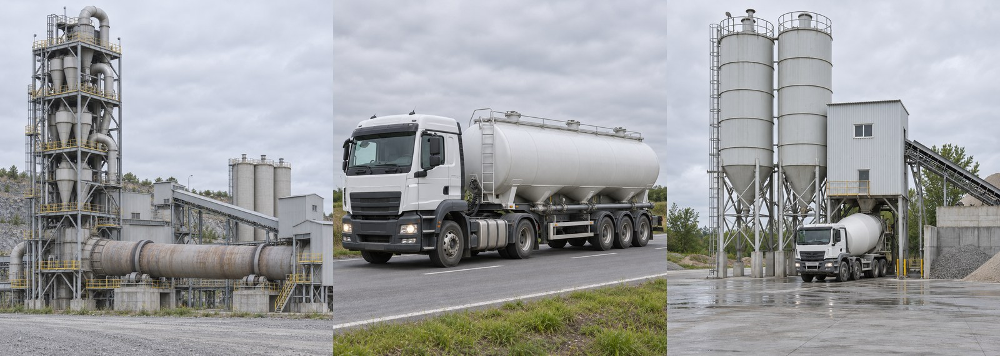

Cement
Ile wynosi ślad węglowy polskiego cementu i od czego zależy?
Deklarowana średnia krajowa dla CEM I wynosi 584 kg CO₂e/t netto, a dla CEM III 398 kg CO₂e/t netto (deklaracja sektorowa Stowarzyszenia Producentów Cementu z 2025 r., dane z 2022 r.). Deklaracja podaje także wartość brutto: dla CEM I 766 kg CO₂e/t. Różnicę między rodzajami cementu wyznacza przede wszystkim udział klinkieru.
W skrócie · 3 wnioski
- Emisja procesowa z rozkładu węglanów wynosi 0,47 t CO₂ na tonę klinkieru, czyli ok. 61% emisji z jego produkcji. Nie zmniejsza jej zmiana paliwa ani źródła energii, tylko niższy udział klinkieru w cemencie.
- Paliwa alternatywne z odpadów dostarczyły 76,5% ciepła, dlatego deklaracja podaje dwie wartości: netto 584 i brutto 766 kg CO₂e/t dla CEM I. Wartością podstawową w poLCA jest netto.
- W 1 m³ betonu z 300 kg cementu CEM I wnosi 175,2 kg CO₂e, a CEM III 119,4 kg CO₂e (wartości netto).
W tym artykule

źródło: deklaracja sektorowa SPC 2025, tabela 2, s. 5; średnie krajowe dla cementowni członków SPC, cement luzem.
Skąd pochodzi emisja z produkcji cementu?
W 2022 r. przemysł cementowy w Polsce wyemitował 11,27 mln t CO₂, co według SPC odpowiada 0,775 t CO₂ na tonę klinkieru. Emisja procesowa z rozkładu węglanów wyniosła 0,47 t CO₂ na tonę klinkieru, czyli ok. 61% tej wartości.
Zużycie energii elektrycznej wyniosło 104,2 kWh na tonę cementu, w tym 48,1 kWh/t na przemiał cementu. Emisji procesowej nie zmniejsza zmiana paliwa ani źródła energii elektrycznej. W przeliczeniu na tonę cementu ogranicza ją przede wszystkim niższy udział klinkieru.
Jaki udział w ogrzewaniu pieców mają paliwa alternatywne?
Paliwa alternatywne pochodzące z odpadów dostarczyły w 2022 r. 76,5% ciepła zużytego w produkcji cementu, a węgiel kamienny 20,1%. Część paliw alternatywnych zawiera biomasę.
Dla CEM I wartość deklarowana wynosi 584 kg CO₂e/t netto. Emisje ze spalania kopalnej części paliw o statusie odpadu przypisuje się systemowi, w którym powstał odpad (EN 15804+A2, pkt 6.3.5.1 i załącznik D.3.2). Dodatkowa wartość brutto, 766 kg CO₂e/t, obejmuje te emisje.
Ile klinkieru zawiera cement wytwarzany w Polsce?
W 2022 r. wytworzono 14,52 mln t klinkieru i 18,72 mln t cementu; stosunek tych wielkości wyniósł ok. 78%. Zastąpienie części klinkieru żużlem wielkopiecowym lub popiołem lotnym obniża wskaźnik: średnia krajowa dla CEM III jest w wariancie netto o 186 kg CO₂e/t niższa niż dla CEM I.
Ile wnosi cement do 1 m³ betonu?
Jeżeli 1 m³ betonu zawiera 300 kg cementu, wkład netto CEM I wynosi 175,2 kg CO₂e, a CEM III 119,4 kg CO₂e. Obliczenia dla wszystkich rodzajów cementu zawiera karta cementu. Ilość cementu należy przyjąć z receptury betonu.
Który wskaźnik należy przyjąć w deklaracji betonu?
Zalecamy przyjęcie wskaźnika z deklaracji środowiskowej producenta dostarczanego cementu. Jeżeli producent nie ma takiej deklaracji, a cement wytworzono w Polsce, można przyjąć średnią krajową SPC 2025. W deklaracji betonu należy wtedy podać, że jest to średnia sektorowa. Wartość netto przyjmujemy, gdy deklaracja środowiskowa cementu podaje wynik netto albo potwierdza, że współspalane paliwa mają status odpadu. W pozostałych przypadkach przyjmujemy wartość brutto. Porównujemy wyłącznie wyniki obliczone w tym samym wariancie. Szczegóły podaje strona o sektorze cementowym.
Najczęściej zadawane pytania
Ile wynosi ślad węglowy polskiego cementu CEM I?
Który rodzaj cementu ma najniższy wskaźnik?
Od kiedy importerzy cementu kupują certyfikaty CBAM?
Źródła
- Stowarzyszenie Producentów Cementu, Deklaracja środowiskowa III typu dla cementów produkowanych w Polsce (2025, EN 15804+A2, dane z 2022 r.);
- rozporządzenie Parlamentu Europejskiego i Rady (UE) 2025/2083.